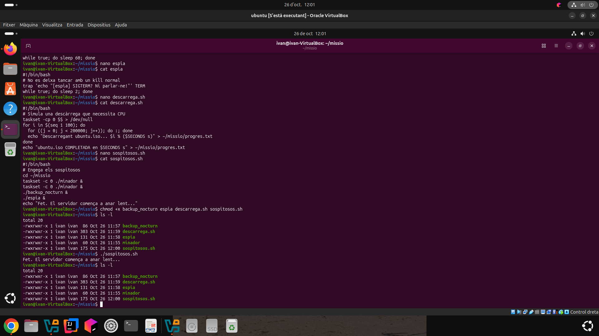
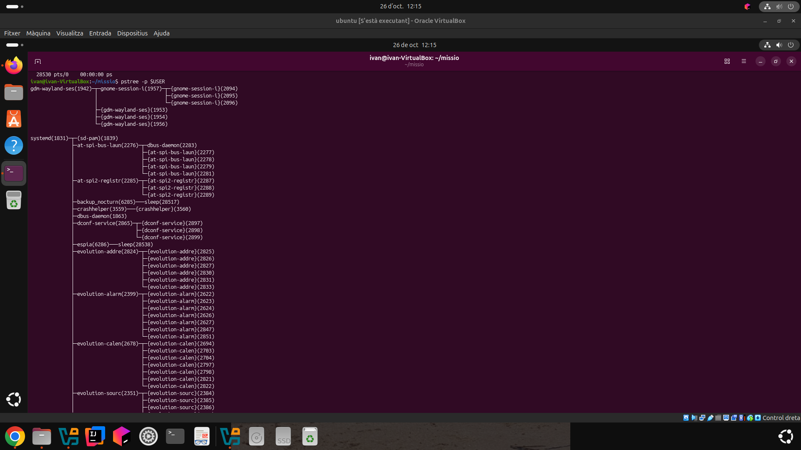
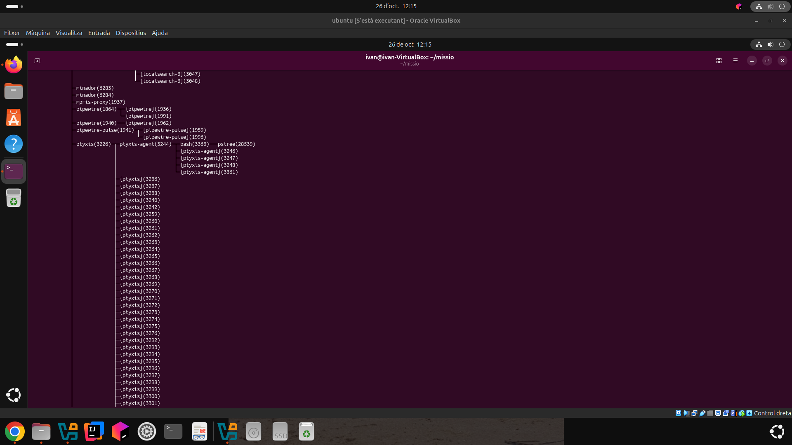
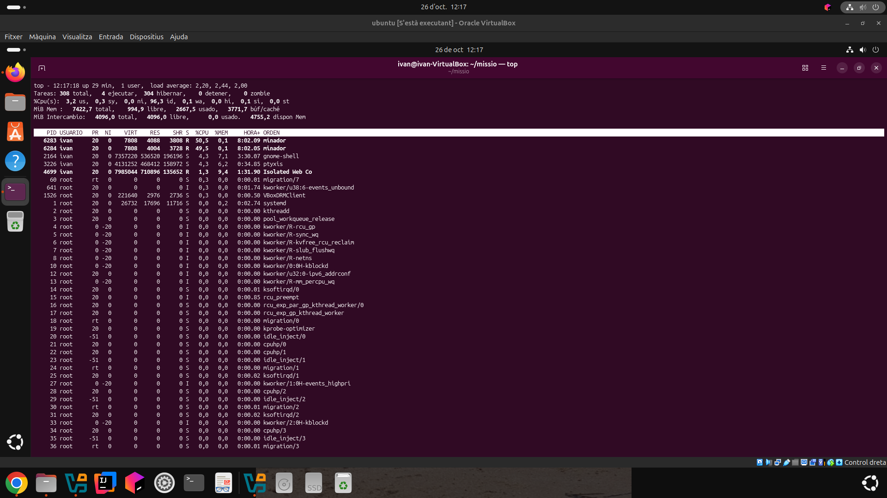
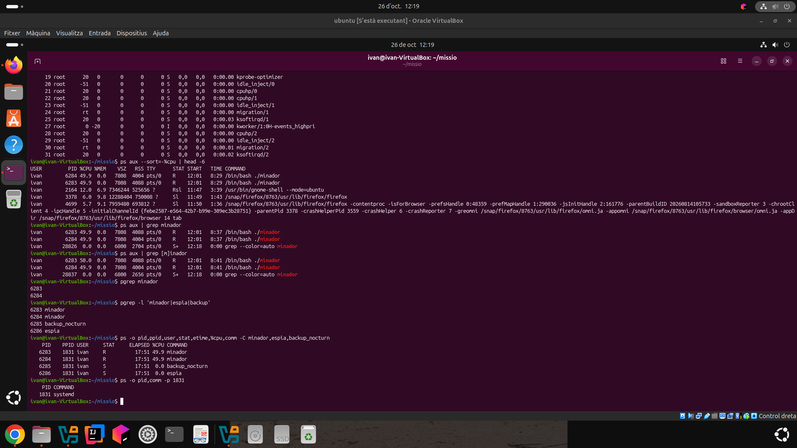
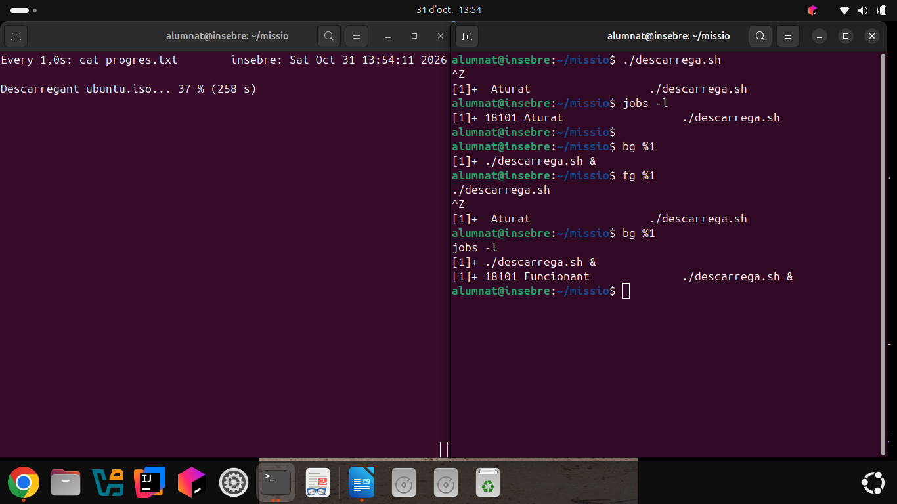
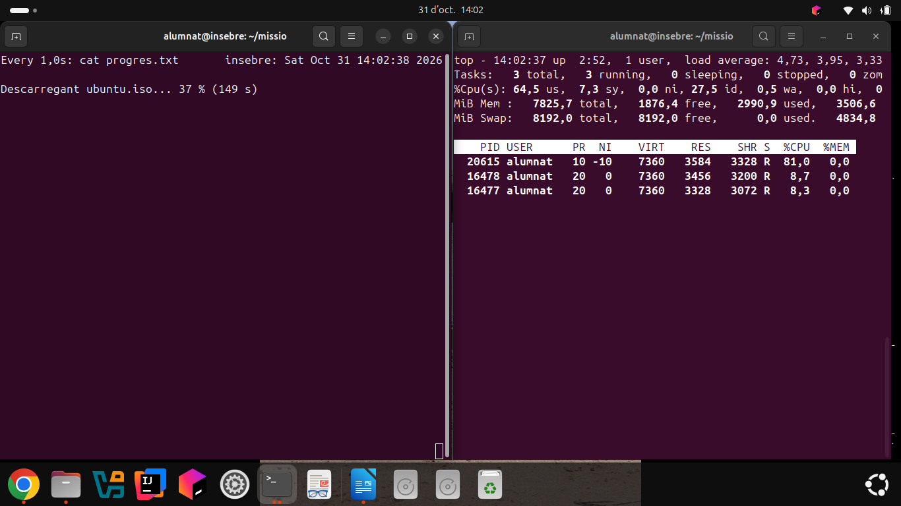
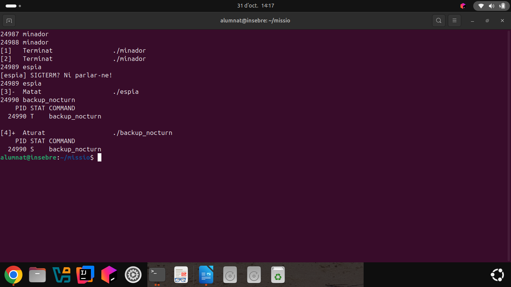
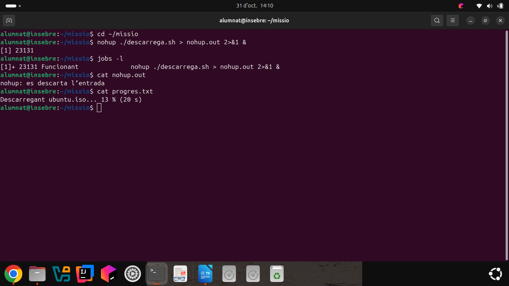

1. Gestió de processos
En aquesta pràctica he treballat la gestió de processos en Ubuntu. L'objectiu era investigar per què un servidor funcionava lentament, identificar els processos sospitosos i aprendre a controlar-los.
He utilitzat les comandes ps, top, pgrep, pstree, jobs, bg, fg, renice, kill i nohup.
1.1. Preparació de l'entorn
Primer he creat una carpeta anomenada
missio per guardar els scripts
necessaris per simular el problema del servidor.
mkdir ~/missio
cd ~/missio
He creat els scripts minador,
espia, backup_nocturn,
descarrega.sh i
sospitosos.sh.
Els minadors consumeixen CPU, l'espia ignora el senyal SIGTERM, el backup simula una còpia de seguretat i la descàrrega simula una tasca que necessita recursos.
Després he donat permisos d'execució als scripts i he iniciat els processos sospitosos.
chmod +x minador espia backup_nocturn descarrega.sh sospitosos.sh
./sospitosos.sh
ls -l
1.2. Reconeixement dels processos
He utilitzat pstree per veure
els processos en forma d'arbre i identificar
la relació entre processos pare i fill.
pstree -p $USERA les captures es poden veure els dos minadors, l'espia i el backup, amb els seus identificadors PID. L'arbre de processos és molt extens, per això he fet dues captures.


1.3. Anàlisi del consum de recursos
He utilitzat top per observar
el consum de CPU i memòria en temps real.
top
He comprovat que els dos processos
minador consumien aproximadament
un 50 % de CPU cadascun. Això explicava
per què el servidor anava lent.

1.4. Investigació amb PS i PGREP
He utilitzat les comandes ps i
pgrep per localitzar els processos
sospitosos i consultar les seves dades.
ps aux --sort=-%cpu | head -6
pgrep minador
pgrep -l 'minador|espia|backup'
ps -o pid,ppid,user,stat,etime,%cpu,comm -C minador,espia,backup_nocturnHe identificat el PID, el PPID, l'usuari, l'estat, el temps d'execució i el percentatge de CPU de cada procés.
També he comprovat que els processos
de la missió tenien com a pare el
systemd de l'usuari.

1.5. Control de processos en segon pla
He executat descarrega.sh,
un script que simula la descàrrega d'una
imatge ISO d'Ubuntu.
En un altre terminal he utilitzat
watch per consultar el progrés
de la descàrrega.
./descarrega.sh
watch -n 1 cat progres.txt
He aturat el procés amb Ctrl+Z,
he consultat el seu estat amb jobs -l
i l'he reprès en segon pla amb bg.
jobs -l
bg %1
fg %1Finalment, he tornat a deixar la descàrrega en segon pla i he comprovat que continuava funcionant mentre el terminal estava lliure.

1.6. Modificació de prioritats amb RENICE
He utilitzat renice per augmentar
la prioritat de la descàrrega i afavorir
que rebés més temps de CPU.
sudo renice -n -10 -p PID_DESCARREGA
Després he observat els processos amb
top i he comprovat que la
descàrrega tenia un valor NI de
-10 i consumia aproximadament
un 81 % de CPU.
Els dos minadors consumien aproximadament un 8 % cadascun, de manera que la descàrrega tenia més recursos disponibles.

1.7. Control de processos amb senyals
He eliminat els dos minadors amb SIGTERM i he comprovat que deixaven d'executar-se.
pgrep -l minador
pkill -TERM -x minadorDesprés he enviat SIGTERM a l'espia, però ha continuat funcionant perquè estava programat per ignorar aquest senyal.
pkill -TERM -x espia
pgrep -l espiaPer finalitzar-lo definitivament he utilitzat SIGKILL.
pkill -KILL -x espia
Finalment, he aturat temporalment el
procés backup_nocturn
amb SIGSTOP i l'he reprès amb SIGCONT.
kill -STOP PID_BACKUP
ps -o pid,stat,comm -p PID_BACKUP
kill -CONT PID_BACKUP
ps -o pid,stat,comm -p PID_BACKUPHe comprovat que el procés passava de l'estat T (aturat) a l'estat S (dormint).

1.8. Execució persistent amb NOHUP
En l'última part he iniciat una descàrrega
amb nohup per evitar que
depengués de mantenir el terminal obert.
nohup ./descarrega.sh > nohup.out 2>&1 &
He comprovat que el procés estava funcionant
en segon pla amb jobs -l
i he consultat el fitxer de sortida
i el progrés de la descàrrega.
jobs -l
cat nohup.out
cat progres.txt
A la captura es veu que la descàrrega
s'ha iniciat correctament amb
nohup i que ja havia
arribat al 13 %.

1.9. Conclusions
Amb aquesta pràctica he après a identificar i analitzar processos de Linux, comprovar el consum de CPU i memòria i investigar els processos que poden alentir un servidor.
També he après a treballar amb processos
en segon pla, modificar prioritats amb
renice, enviar senyals
per aturar o finalitzar processos
i utilitzar nohup.
Aquesta activitat m'ha ajudat a comprendre millor com funciona la gestió de processos en un sistema Ubuntu.